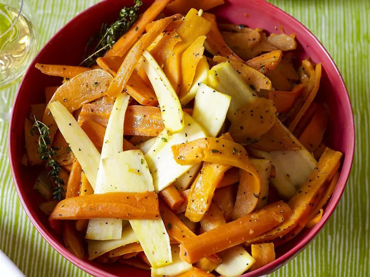

Roasted Sweet Potatoes and Vegetables with Thyme and Maple Syrup recipe

Description
A recipe lifted from allrecipes.com.
Ingredients
- 1 pound sweet potatoes, cut into long, thin rectangles
- 1 large carrot, cut into long, thin rectangles
- 1 parsnip, cut into long, thin rectangles
- extra-virgin olive oil as needed
- salt and ground black pepper to taste
- 4 sprigs fresh thyme
- 2 tablespoons maple syrup, or to taste
Steps
- Preheat the oven to 375 degrees F (190 degrees C).
- Scatter pieces of sweet potato, carrot, and parsnip onto a jelly roll pan; drizzle with olive oil and season with salt and black pepper.
- Roast in the preheated oven until vegetables are partially soft, about 30 minutes. Scatter thyme sprigs over vegetables and drizzle with maple syrup. Return to oven and bake until vegetables are soft, about 15 more minutes.